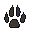

")
Ardougne
Einfache Aufgaben
Aufgabe |
Angefangenes / Beendetes Abenteuer |
Sonstige Voraussetzungen |
|
Lass dich von Magier Cromperty in die Mine der Runenesssenz teleportieren. |
Das Runenmysterium | Keine | |
Versuch, etwas von einem der Marktstände oder von einer der Wachen auf dem Marktplatz von Ardougne zu stehlen. |
Keine | 5 |
|
Verkauf dem Seidenhändler ein Stück Seide zum Preis von 60 GM. |
Keine | Keine | |
Benutz den Altar in der Kirche von West-Ardougne. |
Die verseuchte Stadt | Keine | |
Betrete den Warteraum im Burgenkampf. |
Keine | Keine | |
Geh mit dem Trawler auf Angeltour. |
Keine | 15 |
|
Betritt das Kampftrainingsgebiet nördlich von Ardougne. |
Ein biologisches Risiko | Keine | |
Verhandle mit einem der Zivilisten in West-Ardougne über den Verkauf deiner Katze. |
Gertruds Katze Die verseuchte Stadt |
Keine | |
Töte eine Einkuh im Turm des Lebens. |
Der Turm des Lebens | Keine | |
Bring einen Zivilisten dazu, den Rekrutierungsbeauftragten in West-Ardougne mit Tomaten zu bewerfen. |
Die verseuchte Stadt | Keine | |
Segle von Ost-Ardougne aus nach Karamja. |
Keine | Keine | |
Versuch, das Schloss einer bestimmten Tür östlich des Edelsteinstands am Marktplatz von Ardougne zu knacken. |
Keine | 16 |
|
Gib bei Larry (oder Chuck) im Zoo von Ardougne ein paar Pinguin-Punkte aus. |
Keine | Sprich mit Larry im Zoo von Ardougne | |
Benutz den Beschwörungs-Obelisken östlich der Kampfarena. |
Der sich den Wolf pfeift | Keine | |
Lass im Kloster südlich von Ardougne einen Luftballon platzen. |
Hilfe für den Mönch | Keine | |
Kauf ein mit Wasser gefülltes Fläschchen im Gemischtwarenladen von Aemad und Kortan. |
Keine | Keine | |
Benutz die Karte im Observatorium, um dich über Sternschnuppen zu informieren. |
Keine | Keine | |
Bezwing einen Gegner deiner Wahl auf dem Schlachtfeld von Khazard. |
Keine | Keine | |
Kauf in der Schenke zum giftigen Pfeil ein Schaschlik. |
Keine | Keine | |
Sieh dir die Jagdausrüstung in Alecks Laden an. |
Keine | Keine | |
Erkundige dich beim Chef-Diener in der Gilde der Diener nach Bediensteten für dein Spielerhaus. |
Keine | Keine | |
Teleportier dich mithilfe eines Duell-Rings zur Burgenkampf-Arena. |
Keine | Keine | |
Sprich mit Ramsch Hendler über das Identifizieren von Schwertern. |
Keine | Keine |
Klickt in den unten stehenden Kasten, um die Belohnungen für das Erledigen der einfachen Aufgaben zu sehen:
Achtung: Belohnungen werden verraten Um die Belohnungen zu sehen, markiert einfach den unten stehenden Kasten mit eurem Mauszeiger, um den darin versteckten Text sichtbar zu machen Belohnungen anzeigen...
| Ardougne-Umhang | Beim Tragen: Unbegrenzte Teleporte zum Kloster südlich von Ardougne Mehr Beute von Wesen im Turm des Lebens werden als Zertifikat fallen gelassen Beim Stehlen von den Marktständen in Ardougne werdet ihr nicht mehr so oft erwischt. Ihr erhaltet 200 Jenseits-Runen, wenn ihr den Bürgern von West-Ardougne eine Katze verkauft. Eine Lampe, die 1.000 EP in einer von euch gewählten Fertigkeit verleiht Eure Fertigkeit Gebet wird im Burgenkampf um 10 % erhöht. |
Mittelschwere Aufgaben
Aufgabe |
Angefangenes / Beendetes Abenteuer |
Sonstige Voraussetzungen | |
Betritt das Einhorn-Gehege im Zoo von Ardougne mithilfe der Feen-Ringe. |
Ein Feenmärchen II | Keine | |
Teleportier dich mithilfe des Hebels in Ardougne in die Wildnis. |
Keine | Keine | |
Benutz den Wurfankerpunkt an der Südmauer in Yanille. |
Keine | 39 21 38 |
|
Fertige am Ourania-Altar ein paar Runen. |
Keine | Sehr hohe Kampfstufe empfohlen | |
Verkauf Ezekial Lovecraft in Witchaven etwas Rubium. |
Kennith - Allein gegen alle | 46 |
|
Ernte in der Parzelle nördlich von Ardougne ein paar Wassermelonen. |
Keine | 47 |
|
Sprich den Ardougne-Teleport-Zauber. |
Die verseuchte Stadt | 51 |
|
Flieg im Heißluftballon zum Burgenkampf. |
Erleuchtete Reise | 50 |
|
Hol dir von Bert in Yanille ein paar Eimer Sand. |
Die Hand im Sand | Keine | |
Kehr nach der 'Geschichtsreise' in die Vergangenheit zurück und sprich mit Sarah über Pflanzenkunde. |
Die Geschichtsreise | Keine | |
Fang auf der Fischerplattform einen Fisch mit einem Netz oder einer Angel. |
Invasion der Seeschnecken | 3 |
|
Balancier auf dem Balancierstamm über die Dougne. |
Keine | 33 |
|
Bestiehl den Meister-Landwirt nördlich von Ardougne. |
Keine | 38 |
|
Versuch, aus einer der Truhen in Ardougne eine Natur-Rune zu stehlen. |
Keine | 28 |
|
Bau in den Felsen östlich von Ardougne etwas Kohle ab. |
Keine | 30 |
|
Töte ein Schwerthuhn im Turm des Lebens. |
Der Turm des Lebens | Keine |
Klickt in den unten stehenden Kasten, um die Belohnungen für das Erledigen der mittelschweren Aufgaben zu sehen:
Achtung: Belohnungen werden verraten Um die Belohnungen zu sehen, markiert einfach den unten stehenden Kasten mit eurem Mauszeiger, um den darin versteckten Text sichtbar zu machen Belohnungen anzeigen...
| Verbesserter Ardougne-Umhang |
Zusätzlich zur Belohnung der einfachen Aufgaben, beim Tragen: Täglich einen Teleport zur Parzelle nördlich von Ardougne Magier Cromperty gibt euch 100 Essenz-Zertifikate pro Tag. Ihr könnt den Ring des Lebens auf Ardougne umschalten. Wenn ihr euch über den Hebel in Ardougne in die Wildnis teleportiert , erhaltet ihr 10 Sekunden Immunität. Noch mehr Beute von Wesen im Turm des Lebens werden als Zertifikat fallen gelassen Beim Bestehlen von NSC in Ardougne werdet ihr nicht mehr so oft erwischt. Die Chance, am Ourania-Altar mehr Runen zu erhalten, steigt. Eine Lampe mit 7.500 EP in einer von euch gewählten Fertigkeit |
Schwere Aufgaben
Aufgabe |
Angefangenes / Beendetes Abenteuer |
Sonstige Voraussetzungen |
|
Lade in der Gilde der Legenden ein Armband der Kämpfer oder eine Fertigkeits-Halskette auf. |
Das Legendenabenteuer | Keine | |
Besieg im Keller der Gilde der Legenden einen Schattenkrieger. |
Das Legendenabenteuer | Keine | |
Betritt die Gilde der Magier in Yanille. |
Keine | 66 |
|
Benutz das Portal in der Gilde der Magier, um dich zu Thormacs Turm zu teleportieren. |
Keine | 66 |
|
Sei beim Burgenkampf im siegreichen Team. |
Keine | Keine | |
Sprich den Ourania-Teleport-Zauber. |
Monddiplomatie | 71 |
|
Bestiehl einen Wachmann in Yanille, während du Handschuhe der Stille trägst. |
Keine | 65 54  |
|
Töte einen Froaal im Turm des Lebens. |
Der Turm des Lebens | Sehr hohe Kampfstufe empfohlen | |
Lass dich von einem der Zoowärter in Ardougne in den Affenkäfig sperren. |
Total Banane | Keine | |
Bezwing nach dem Abenteuer 'Zurück zu den Wurzeln' deinen eigenen Jadewein. |
Zurück zu den Wurzeln | 59 |
|
Benutz in der Nähe der Musikantin vor dem Kloster südlich von Ardougne die Geste Luftgitarre. |
Keine | Dazu muss man 500 Musikstücke freigeschaltet haben. | |
Sprich den Wachturm-Teleport-Zauber. |
Der Wachturm von Yanille | 58 |
|
Überquer die Hangelstangen im Verlies von Yanille. |
Keine | 57 |
|
Fang im Jagdgebiet vor dem Ourania-Altar einen roten Salamander. |
Keine | 59 | |
Pflück in der Obstbaum-Parzelle beim Baumgnomendorf eine Papaya oder Kokosnuss. |
Keine | 57 |
|
Versuch, aus der Truhe im Turm der Chaosdruiden einige Blut-Runen zu stehlen. |
Keine | 59 |
|
Benutz das Katapult im Burgenkampf, nachdem du dir während des 'Katapultbaus' das entsprechende Wissen angeeignet hast. |
Katapultbau | Keine |
Klickt in den unten stehenden Kasten, um die Belohnungen für das Erledigen der schweren Aufgaben zu sehen:
Achtung: Belohnungen werden verraten Um die Belohnungen zu sehen, markiert einfach den unten stehenden Kasten mit eurem Mauszeiger, um den darin versteckten Text sichtbar zu machen Belohnungen anzeigen...
| Verbesserter Ardougne-Umhang |
Zusätzlich zur Belohnung der einfachen und mittelschweren Aufgaben, beim Tragen: Magier Cromperty gibt euch 150 Essenz-Zertifikate pro Tag. Erlaubnis, den Wachturm-Teleport auf Yanille umzuschalten Nachdem ihr die Truhen im Schloss von Ardougne oder unter dem Turm der Chaosdruiden geplündert habt, werdet ihr in die nördlichste Bank von Ost-Ardougne statt an einen Zufallsort teleportiert. Noch viel mehr Beute von Wesen im Turm des Lebens werden als Zertifikat fallen gelassen Beim Bestehlen der NSC oder der Marktstände überall auf RuneScape werdet ihr nicht mehr so oft erwischt. Eine Lampe mit 28.000 EP in einer von euch gewählten Fertigkeit |
Elite-Aufgaben
Aufgabe |
Angefangenes / Beendetes Abenteuer |
Sonstige Voraussetzungen |
|
Fang auf dem Trawler einen Teufelsrochen. |
Keine | 81 |
|
Lass einen Höllen-Titan-Vertrauten deine Essenzen für dich tragen, während du am Ourania-Altar Runen fertigst. |
Der sich den Wolf pfeift | 93 |
|
Versuch, das Türschloss zum Untergeschoss im Gewandtheitsverlies in Yanille zu knacken. |
Keine | 82 |
|
Nimm am Ourania-Altar etwas reine Runenessenz aus einem riesigen Beutel. |
Das Runenmysterium Höllenschlund-Miniabenteuer |
75 |
|
Bau dir eine Runit-Armbrust und führ jeden Herstellungsschritt entweder in Witchaven oder Yanille durch. |
Keine | 91 69 |
Klickt in den unten stehenden Kasten, um die Belohnungen für das Erledigen der Elite-Aufgaben zu sehen:
Achtung: Belohnungen werden verraten Um die Belohnungen zu sehen, markiert einfach den unten stehenden Kasten mit eurem Mauszeiger, um den darin versteckten Text sichtbar zu machen Belohnungen anzeigen...
| Verbesserter Ardougne-Umhang |
Zusätzlich zur Belohnung der einfachen, mittelschweren und schweren Aufgaben, beim Tragen: Unbegrenzte Teleporte zur Parzelle nördlich von Ardougne 4 Lampen mit jeweils 50.000 EP in einer von euch gewählten Fertigkeit |
Um weitere Informationen über die verschiedenen Gebiete in und um Ardougne zu erhalten, besucht bitte die Seite mit dem entsprechenden Reiseführer.

Weitere Artikel in Aufgabenliste
|
|
|
Weiterführende Informationen Wenn euch dieser Artikel nicht weitergeholfen hat, könnt ihr in den folgenden Kapiteln der RuneScape-Webseite mehr Informationen finden:
|
|